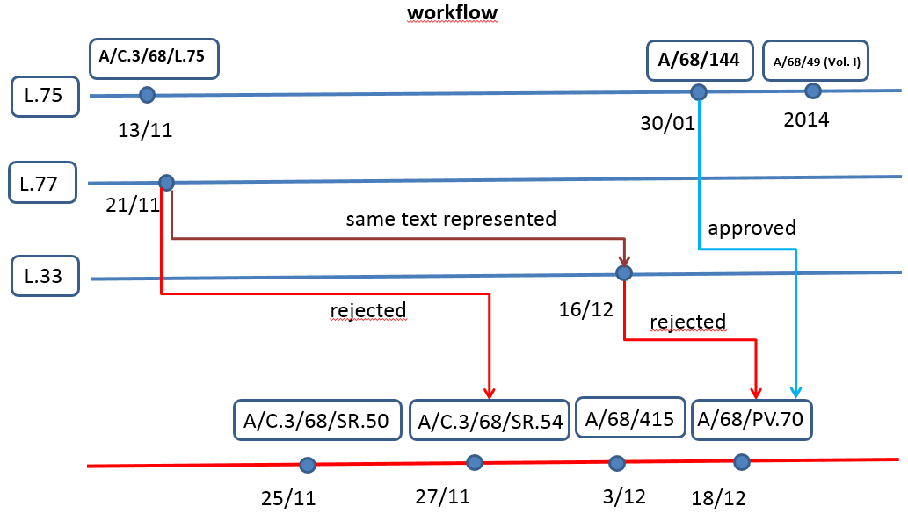

Resolution Lifecycle
In this example we will model the entire lifecycle of resolution A/RES/68/144, Report of the Human Rights Council, from the submission of the draft resolution up to the inclusion in the Official Records compilation.
TYPE of document | notes |
13 November 2013 The draft resolution sponsored by Gabon on behalf of the Group of African States is published: A/C.3/68/L.75. | See AKN4UN modelling in: 01_resoutionL.75.xml |
21 November 2013 The amendment to the draft resolution L.75 sponsored by Lithuania is published: A/C.3/68/L.77. | See AKN4UN modelling in: 02_resoutionL77.xml Note in <analysis> the amending metadata |
25 November 2013 Third Committee (50th meeting) The draft resolution L.75 is introduced See Summary Records page 2/6: A/C.3/68/SR.50 | This document is the source of the following that will be reported in the modelling of the approved resolution 68/144: Draft resolution L.75 introducers Introduction |
27 November 2013 Third Committee (54th meeting) The amendment to draft resolution L.75 is introduced and voted upon and rejected. Draft resolution is voted upon and adopted See Summary Records page 12/19: A/C.3/68/SR.54 | This document is the source of the following that will be reported in the modelling of the approved resolution 68/144: Introducers of L.77 Voting results of L.77 Name of voters of L.77 Voting results of L.75 Name of voters L.75 |
3 December 2013 The Third Committee Report recommends to the General Assembly the adoption of the draft resolution. The report also reflects the history of the draft resolution (see chapters I and II) See report A/68/451. | This document has been marked-up because it is the source of voting records, that ideally once marked-up here can be reused in other context e.g. Official Records. This document also showcases the “reuse” of L.75 mark-up that is included inside of the Report, since the “expression” is identical to the original one. See AKN4UN modelling in: 03_reportThirdCommitteeA-68-451.xml |
16 December 2013 The amendment to the draft resolution L.75 sponsored by Albania and other Member States is published: A/68/L.33. | This amendment is substantially a preproposition of L.33, text and reasons are the same. Two possible options for connecting L.33 with L.77: Add <FRBRalias> to L.77 new expression /akn/un/statement/deliberation/ga/2013-11-21/L.77/eng@2013-12-16 (this is what is currently in the example) Use This option is b) “light” relationship, while option a) very strong and meaningful. See AKN4UN modelling in: 04_resoutionL.33.xml |
18 December 2013 General Assembly 70th Plenary Meeting Discussed: Amendment L.33 is voted upon and rejected. Draft resolution L.75 is voted on and adopted See Official Records: A/68/PV.70. | This document is the source of the following that will be reported in the modelling of the approved resolution 68/144 Introducers of L.33 Type of action done inside of the workflow Voting results of L.33 Name of voters of L.33 Voting results of L.75 Name of voters L.75 |
30 January 2014 The adopted resolution is issued with the symbol A/RES/68/144 | The approved resolution included all the relevant metadata of the reports: A/68/451 , A/C.3/68/SR.54 and A/68/PV.70. These metadata are modelled in: <workflow> all the workflow related events <analysis> <parliamentary> for recording the voting results See AKN4UN modelling in: 05_resoution68-144.xml |
2014 General Assembly Official Records -Sixty-eighth Session The authoritative text of the resolution is published in the annual compilation A/68/49(Vol.I), page 532, together with the outcome of the vote. | This version of resolution 68/144 is substantially identical to the one published in A/RES/68/144 . The only difference is that in the compilation version the <conclusions> are dropped. So we have a new “expression” IRI in <FRBRthis>. |
